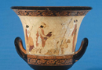
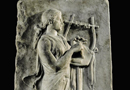
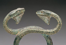
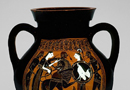
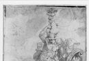
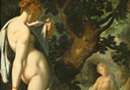
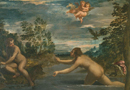

Hermes
Hermes is the son of Zeus and Maia, a nymph and daughter of Atlas. His affair with Maia and his birth are recounted in the 18th Homeric Hymn to Hermes:
'Of Hermes, Kyllenian god and slayer of Argos, I sing, who over Kyllene reigns and Arkadia rich in flocks, the immortals’ speedy messenger. Maia gave him birth, Atlas’ daughter, having joined in love with Zeus, being worthy of reverence. Shunning the throng of blessed gods, she dwelt in a deep-shaded cave, where Kronos’ son used to join with the nymph whose tresses are fair at the milking-time of night, while Hera whose arms are pale in the sweetness of sleep was clasped, and neither immortal gods nor mortals knew.'
In this short hymn, we not only hear of his birth, but also one of his chief characteristics which remains important throughout all of Classical mythology. Hermes is a messenger god, who has a particularly close connection to Zeus. You may remember when reading the Homeric Hymn to Aphrodite that Hermes was mentioned several times as a messenger god; he is the one who comes down to earth to give messages to both mortals and gods from Zeus. When, in the Odyssey, Odysseus is about to go and visit the house of the witch Circe, Hermes appears to Odysseus to give him the warning that he should not sleep with the witch until he has made her promise not to hurt him; this is a message from the heavens which saves the hero Odysseus from disaster. In many myths, Hermes can be seen acting in the role of messenger. One example of this is the part which Hermes is sometimes said to have played in the birth of Dionysus. Zeus shows himself to his mortal lover Semele, the mother of Dionysus, in his true form as a lightning bolt, and she is burned to ashes; one version of the myth has Hermes take Dionysus, the unborn son of Semele and Zeus, from the ashes and deliver him to Nymphs to be reared. (see image 1)
{kind=link}
Hermes, is, however, far more than just a messenger god. There are other messenger gods who are connected to Zeus, such as Iris, but she is not a major Olympian god such as Hermes. Hermes is an extremely clever god, who is presented in mythology as a trickster, who can often be very funny. The long Homeric Hymn to Hermes tells of the childhood of the precocious god, and the trouble that he gets into with Apollo for stealing his cattle. He is also in this hymn said to be the inventor of the lyre. The poem begins by giving a more detailed account of Hermes’ birth:
'At dawn he was born, at midday was playing the lyre, and stole at evening cattle owned by Apollo who shoots from afar, on d the day that queenly Maia bore him, the fourth of the month. When he leaped from his mother’s deathless limbs, he did not for long remain in the sacred winnowing fan, but jumped up to search for Apollo’s cattle, and over the vaulted cave’s threshold went.'
Hermes is immediately precocious, or in other words, beyond the abilities you would expect of his age. This is common amongst gods, who are said to be beyond their age from the very moment they are born. Apollo, for example, is said to have prophesied out of the womb of his mother, precocious even before birth itself. The fact that Hermes is here said to be the inventor of the lyre, a quality which Apollo eventually rules over, also signifies the connection which the gods have. But they are not immediately gods who are comfortable with each other. When Hermes first leaves the cave in which he was born, he finds a tortoise there, and makes the lyre out of this:
'He found a tortoise there, and vast good fortune gained: Hermes it was who made the tortoise a singer first. At the courtyard gates she met him, grazing in front of the house on the thickly flourishing grass, and moving with waddling steps. The speedy son of Zeus with a laugh at the sight at once said: ‘Already I have a sign of great profit: I make no complain. Hello there, shapely charmer who beats out time for the dance, you feast’s companion who come most welcome to view! But where did you get this beautiful toy, a glittering shell, to put on, you tortoise who live in the mountain? No matter, into the house I will bring you; no slights will you get from me in return for your help….he returned back into the house, the lovely toy in his grasp. There tossing her up, with a knife of grey iron he scooped out the flesh of the tortoise that dwelt in the mountains….cutting reed shafts to measure, he fitted them, piercing the back, through the shell of the tortoise; about it he stretched with his cunning the hide of a cow, affixed the arms and fastened the yoke to them both, then stretched seven cords of sheep’s gut to serve as harmonious strings.'
Here we have a very detailed description of the lyre and its form in the ancient world. They were not always made from the tortoise shell, but theymost commonly had seven strings. Here is a depiction of Apollo or a Muse with the lyre (see image 2).
{kind=link}
Almost as soon as he has finished making the lyre, Hermes sets out again, a tricky god, to get some meat for himself, and steals the cattle of Apollo. Note that there is an emphasis laid on Hermes' trickery in this myth. In order to prevent detection, Hermes turns around all the hooves of the cattle, and actually walks backward himself, so as to fool Apollo into thinking that he and the cattle were actually walking in the other directions. He then takes some of the cattle and roasts them because he his anxious for the taste of meat which he in the end does not actually eat (gods do not eat meat and it is remarkable that Hermes considers this in the myth.
Having done all this in his first day of life, Hermes returns quickly to his cradle and plays once again the part of the baby. His mother Maia is not fooled and says to him:
'What are you up to subtle rogue, arriving here in the night from who knows where, parading your barefaced cheek? It is no my firm belief that with bonds about your ribs against which struggle is futile, bonds that nothing can loose, you will pass out through the porch in the grasp of Leto’s son, rather than that you will plunder and rob when you please in the glens' (pg. 48)
Hermes, though, now plays up the fact that he is only a young babe who could not possibly have stolen cattle! Removed from the cultural context, you might not immediately see the humour in this myth. But think of a character such as Stewie in the Family Guy, who is simultaneously a child and a clever character capable of plotting world domination! In the Hymn to Hermes,this extremely amusing play between his being a small child and a yet a god who can accomplish a lot is continued when Apollo comes to confront him about his cattle. Apollo, who knows full well what Hermes has done, threatens Hermes with punishment if he does not get his cattle back. Hermes responds that he has no idea where the cattle went, and suggests that the gods would be amazed if a new born such as himself could have accomplished the theft of the cattle. Apollo of course still does not believe him, and he lifts Hermes up to take him to Zeus to have the dispute settled. Here, the comedy of the situation descends to the level of bodily humour
: 'Phoebus Apollo, to carry him, seized the child. But the mighty Slayer of Argos, while being raised up in his hands, took thought and sent out an omen, the brazen labouring man of his belly, a wicked messenger, after which quickly he sneezed. Apollo heard it and threw illustrious Hermes to earth, seated before him, though eager to speed on the way, aiming his taunts at Hermes, and to him spoke these words: ‘Take courage, swaddled infant, Zeus and Maia’s son. I shall then indeed discover where my strong cattle are, by means of these omens-and you, moreover, will lead the way.' (pg. 53).
In other words, Hermes, when he was picked up by Apollo, let out a precocious, resounding, and presumably divine, fart or belch! The comic scene is well set here; for on one level, the fart of Hermes is what one might expect of a child of his age. Yet, on another level, it is amusing that Apollo takes this to be an omen of confirmation of whether he was close to finding his cattle. Sneezes were sometimes taken as omens in ancient Greece, but not farts. Such a scene reminds us of comedy of the fifth century in Athens, where such bawdy humour was commonplace.
Zeus eventually solves the dispute. In this part of the myth, we see the close connection that existed between Zeus and Hermes in mythology. Hermes has previously in the course of the myth disobeyed his mother, lied to his mother, and even lied to Zeus, but now, when Zeus commands him, he obeys, returning the cattle to Apollo. We begin to see a more responsible side of Hermes, who is not always presented as the trickster he is in this myth. This section of the myth is also interesting because it shows Hermes not only as a messenger, but also a conductor, another role that he plays in mythology. You may remember from the Hymn to Aphrodite that Aphrodite, in her disguise of a mortal woman, claimed to Anchises that Hermes had led her to him across the skies. In other myths, Hermes is often the conductor of individuals, and often the conductor of the souls of men to the underworld. What we have at the end of the Homeric Hymn to Hermes is a final division of powers between the two gods; Apollo will be the god of prophecy and music, while Hermes will carry the counsel of Zeus throughout the world. The rod (the caduceus) which Apollo gives to Hermes in the hymn, is a traditional item that Hermes has in artistic depictions (see images 3-5).
{kind=link}
{kind=link}
{kind=link}
Despite the eventual separation of the gods, this myth also signifies the close connection between Hermes and Apollo. They are both young gods who are presented in art as strong and beautiful. Also, both Hermes and Apollo in myth share pastoral and musical characteristics. Hermes is the father of Pan, who is part man and part goat and himself credited with the invention of the panpipe (hence today the pan flute), and we saw when we looked at Apollo that Pan contested with Apollo in a musical contest. Also, the staff which Apollo gives to Hermes can sometimes have two snakes wrapped around it, and in art can be confused with the staff of Apollo’s son Asclepius, whose staff with two snakes was a sign of the physician, as it is still today.
One thing that needs to be made clear about the myth of Hermes in the Homeric Hymn is that his trickiness and his lies are not seen as negative qualities. Although we would often consider such lying to be a negative character trait, many renowned heroes and gods in the ancient Greek world are tricky and fool those around them. On the human level, one of the most famous of Greek heroes, Odysseus, was known for his ability to trick those whom he encountered, and to tell elaborate lies. Throughout the Odyssey he is constantly telling lies about how he is originally from Crete. Cleverness, even if it involves lying, is a good trait in the ancient Greek setting.
Hermes is also a god who often conducts people to the underworld, in his role as psychopompos or ‘conductor of souls’. Similar to Demeter, who is connected also to the underworld, Hermes is a god who is at times worshipped as a fertility god. Statues of Hermes, called ‘Herms’ were considered fertility symbols in the ancient world, and they were worshipped by many individuals. Such statues were sacred, and it was a great crime to defile the image of Hermes. In Athens, people were charged for disrespecting or profaning the Herms; in 415 the great general Alcibiades was charged with having mutilated the herms of Athens. The statues were phallic, with a head of Hermes on the top.
If one looks at the representations of Hermes in myth as a whole, he is perhaps best summed up as a god who crosses boundaries. As the messenger of Zeus, he often crosses the divide between mortal and immortal, bringing information from the gods to humans. He is also a bridge between the gods themselves, and delivers information from one party to another. As the escort of human souls into the underworld as psychopompos he can be seen once again to cross over from the boundary of life into death. For the most part the Olympian gods stay away from Hades and death which they detest, but Hermes acts as a link between the two worlds. In another famous myth surrounding him, he can also be seen to cross over the boundaries between male and female. We have previously seen that Aphrodite has affairs with several gods, with her husband Hephaestus, the god of craft, and with Ares, the god of war. She is also known in myth to have had an affair with Hermes which produced a son known as Hermaphroditus. The story of the union of Hermaphroditus with the nymph Salmacis is told by Ovid in his Metamorphoses (4. 285-388). After he is born, the beautiful Hermaphroditus (taking after his mother and father of course) goes into the hills, where the nymph Salmacis falls in love with him immediately and wants to make love to him. She confronts him but he refuses, and she tricks him by saying that he can use her spring freely. He gets into the water and takes off his clothes, at which point Salmacis tries to take hold of him. She struggles with him and tries to overcome him, but ultimately blends with him. This is in one sense an explanation or aition for the rare occurrence of a human being having both sexual organs; hence the modern term hermaphrodite. But beyond this, Hermes and his offspring are once again crossing boundaries, this time of gender. Hermaphroditus is properly a being with the qualities of man and woman so mixed that it is impossible to tell which is which, an idea exploited in artistic representations (see images 6-7). As modern studies have shown, gender is a spectrum. Hermaphroditus can be understood as a bridge between the two opposites, and an exploration of the interaction of genders.
{kind=link}
{kind=link}
Hermes, then, is a messenger of the gods (particularly Zeus), a conductor of souls to the underworld, and more generally a crosser of boundaries. He can be a humorous character in myth, full of trickery and playfulness, but he is also a god involved in more serious business of the underworld.